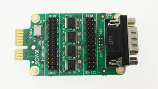

Slice Card Overview
Pack Contents
- One XA-SK-GPIO Slice Card
- One RS232 parallel cable with DB9 connector

GPIO Access Features
- A variety of XMOS ports of 1 bit, 4 bit and 8bit type are exposed for access via 0.1” headers.
- Access to 4 LEDs via a 4 bit port
RS232 UART
- A pair of 1 bit ports are used with an RS232 transceiver and DB9 connector to provide a standard UART terminal running up to 115.2 KBaud which can be connected to any PC COM port or modem.
4 Channel ADC With xternal Temperature Sensor
- An ADC with a standard 2-wire interface is provided, with an external linearised thermistor connected to the first ADC channel.